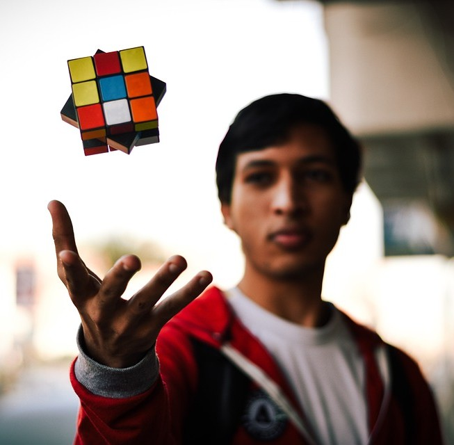

Interactive guides and videos breaking down solving techniques.
A 3D Rubik's Cube simulator to practice algorithms directly on the website.
A searchable database of popular algorithms, categorized by solving methods.

A global leaderboard to motivate users by comparing their progress with others.